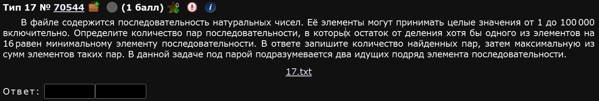
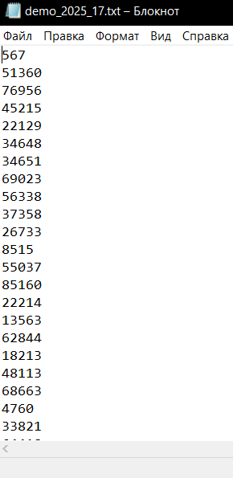
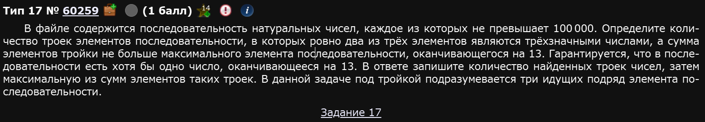
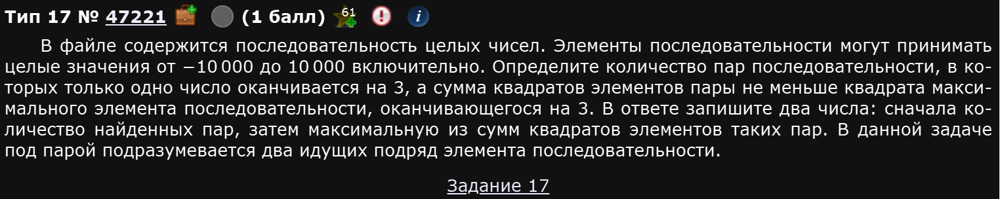
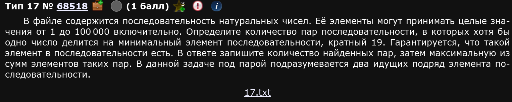

Задание считается одним из сложных в условной первой части. Представляет из себя работу с текстовым файлом и грамотно прописанные условия. Вчитываемся, не торопимся и вы станете неотразимы.
В 2026 году изменений нет.
Пример 1)

Собсна, для начала нам нужно скачать файл и закинуть его в ту папку, откуда мы будем запускать нашу программу. Этот шаг не обязателен, однако, в таком случае, вам придется указывать полный путь до файла, что займет у вас лишние усилия.
Окей, закинули
Открываем файл и действительно видим последовательность натуральных чисел:

Не советую считать их ручками, их там 10 000,,,
Чтобы питон открыл файлик надо написать ему следующее:
file = open('C:/Users/bezzz/OneDrive/Desktop/All/Pabota/Another_one/Inf/Tests/Norm/17/demo_2025_17.txt') # Здесь указан полный или абсолютный путь до файлаТ.е. вам нужно объявить переменную и закинуть в нее открытый файл. В целом, питон сам закроет файлик после выполнения программы, так что можно заигнорить момент с закрытием файла. Однако, если мы так и оставим переменную file питон будет считать ее одной большой строкой, чего нам не надо. Нам надо, чтобы питон считал эту большую строку списком из чисел. Так и делаем:
num = [int(i) for i in file]
file.close() # Закроем файлик из вежливостиВот теперь в переменной num содержится то, что нужно - список всех чисел из файла.
До того как будем писать непосредственное условие с циклом нам необходимо также задать минимальный элемент списка и обозначить еще один маленький список для пар чисел:
mini = min(num)
par = []Ну вот теперь можно писать сам цикл. Мы будем прогонять каждый элемент списка, начиная со второго (для питона этот элемент имеет индекс 1, т.к. нумерация с 0) и чекать делится ли он или предыдущий элемент списка на 16 так, чтобы остаток был равен mini т.е. минимальному элементу списка и если да, то мы тупо докидываем в наш список пар сумму его и с предыдущим элементом методом append. Ну, и в конце принтуем длину нашего списка пар и максимум из этого списка т.е. максимальную сумму, как и просят по условию задания. Как-то вот так:
for i in range(1, len(num)):
if num[i] % 16 == mini or num[i - 1] % 16 == mini:
par.append(num[i] + num[i - 1])
print(len(par), max(par))Собсна все, соединяем код:
Получаем на выходе числа 1214 и 176024. Это и есть наши ответы.
Ответ: 1214 176024
Не лишнее
Надо признать, что в демке 2025 ЕГЭ по информатике 17 задание довольно легкое. И не просто так: видимо, ФИПИ решили немного понерфить его (однако, точную информацию мы получим на досроке). ФИПИ в своих аналитических отчетах (судя по отчету за 2023 год) подмечает, что 17ое задание выполняется всего лишь в 20% случаев. Для сравнения: подобный процент выполнения имеет лишь несколько заданий экзамена - 6 (черепашка), 9 (сложный ексель), 24, 26 и 27 (условно вторая часть, сложное программирование), в то время, как задания 1, 2, 3, 4, 10 и 19, например, имеют процент выполнения на уровне 80%.
Поэтому не лишним будет посмотреть как выглядело это задание в предыдущих годах.
Пример 2)

Начало такое же: открываем файлик, читаем файлик, закрываем файлик.
file = open('C:/Users/bezzz/OneDrive/Desktop/All/Pabota/Another_one/Inf/Tests/Norm/17/17_2024')
num = [int(i) for i in file]
file.close()Сложность начинается приблизительно со второго предложения условия:
Определите количество троек элементов последовательности, в которых ровно два из трёх элементов являются трёхзначными числами, а сумма элементов тройки не больше максимального элемента последовательности, оканчивающегося на 13.
Это дополнительное условие про остаток от 13 заставляет нас отдельным циклом найти максимальный элемент, оканчивающийся на 13. Сделаем это:
max13 = 0
for i in range(1, len(num)):
if (num[i] > max13) and (num[i] % 100 == 13):
max13 = num[i]
print(max13)Программка выдаст 98413. Отлично, нашли.
Далее самое прикольное: надо сделать такое условие, чтобы только два числа были трехзначными, а третье - нет. Самое первое, что приходит в голову - тупо перечислить все случаи т.е., условно, у нас могут быть трехзначными либо первое и второе, либо второе и третье, либо первое и третье, иных вариантов нет. Минус - придется довольно долго и муторно писать это все, строчка будет большой.
Можно, конечно, и так, однако есть идея такая же, но шушуть получше: каким-либо образом накинуть счетчик на числа. Т.е. типа мы можем в каждом числе посчитать кол-во символов. Так и попробуем сделать.
Со вторым условием про max13 все просто, в коде будет кристально видно.
Ответ: 959 97471
С первого раза далеко не интуитивно как выполнять те или иные условия в этом задании. Однако, с опытом, вы научитесь это делать.
Пример 3)

Покажу немного другой способ открыть файлик (в целом, не так важно как именно вы это сделаете, главное - что сделаете):
num = [abs(int(i)) for i in open('C:/Users/bezzz/OneDrive/Desktop/All/Pabota/Another_one/Inf/Tests/Norm/17/17_demo_2023.txt')]Тута я записал в переменную список из модулей значений и указал прям в ней же как ей это делать циклом и из какого файла.
Найдем максимальный элемент:
m3 = 0
for i in range(len(num)):
if num[i] % 10 == 3:
m3 = max(m3, num[i])
#print(m3)Тут и в дальнейшем я не говорю питону проходить цикл до len(num)-1 т.к. он и так пройдет весь нужный цикл, просто в первой итерации сравнит нулевой элемент с последним.
Основной цикл можно написать двумя разными способами:
- Написать через
orчто мол либо первое оканчивается на 3, либо второе - Поставить счетчик, который будет считать сколько элементов в паре оканчиваются на 3
Покажу оба способа:
Ответ: 180 190360573
Пример 4)

Решение может быть еще более коротким, например таким:
Ответ: 142 175430.